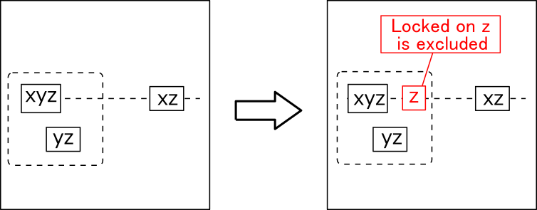
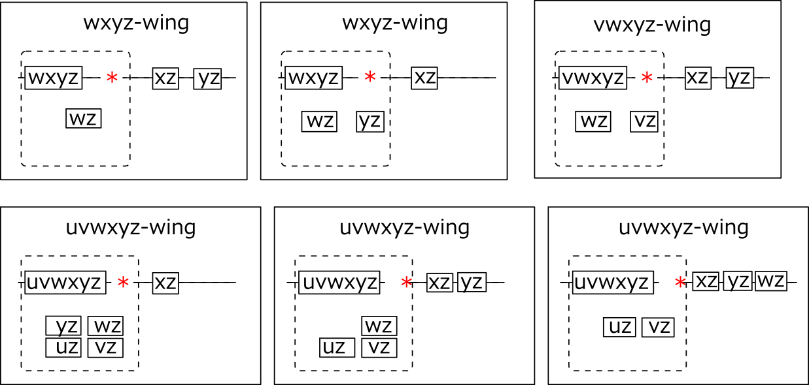
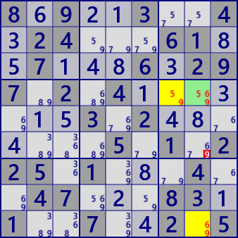
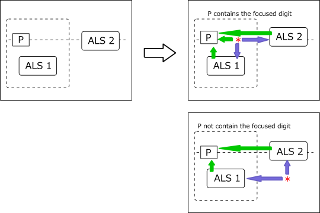

XYZ-Wing（Basic form）
XYZ-Wing will evolve.
XYZ-Wing is an analysis algorithm that uses the intersection of blocks and rows(or columns).
It is assumed that the candidate number is a cell of xyz,
the candidate numbers of other cells belonging to the same row are xz,
and the candidate numbers of other cells belonging to the same block are yz.
At this time, the candidate number z can be excluded from the cell
that is as the same block and same row(right figure).
Even if rows are replaced with columns.

Let candidate number and cell number be orders. There are 4th to 6th order analysis algorithms.
WXYZ-Wing(4th), VWXYZ-Wing(5th), UVWXYZ-Wing (6th) In both cases, the cells other than the axis cell are bivalue (two candidate). Also, in case of 3rd order, there was 1 cell placement in each row and block, but there are various variations in arrangement of 4th order or more(next figure) The cell marked with* is in Locked and the number Z is excluded from this cell. However, the condition "all the cells have a targeted number, and all bivalue cells except the target cell" are too strict. Patterns of 4th order or higher are rare. The way to relax the condition of bivalue (XYZ-WingEx) is shown later.

The point of this analysis method is Locked when a cell is focused, if bivalue cells in the influence area of the cell are aggregated in row/block(or column/block), it agrees with the candidate number of the focused cell. Here is an example of XYZ-Wing. (Left: XYZ-Wing right: WXYZ-Wing)


8.9..3..4.24...61..7...6.297.2.4.......3.2.......5.1.225.1...4..47...83.1..7..2.5
..3..4...1.86539...5.7...83..6.37.9.7..4....54.....72.....9.51...9..6...8..3..26.
XYZ-WingALS
XYZ-Wing is an algorithm of the combination of the axis cell and the bivalue cell.
The cell group in the block to be combined and the cell group outside the block form ALS respectively.
Therefore, remove the condition of bivalue.
XYZ-Wing logic is established even if it is expanded to a combination of the cell serving as the axis,
the ALS in the block and the ALS outside the block.
The following figure is an image of XYZ-Wing (ALS).
When the number X of the cell* is true, ALS1 and ALS2 become LockedSet,
and the result shows the relationship affecting the candidate number of the axis cell P.
When the axis cell P does not contain the noted number X(lower right figure),
the cell* can also be at a position where
it can relate to all of the target numbers in both ALS.

The establishment conditions and analysis algorithm of XYZ-Wing(ALS) can be configured as follows.
- Generate all ALS
- Select axis cell(The number of candidate of the cell is the order)
- Set the number X(Focused number)
- Select a row or column of axis cells(explained below in row selection)
- Select ALS2 that contains X, in the selected row and outside the block
- Select ALS1 in the block containing the axis. ALS1 contains X and does not include the selected row.
- Numbers in row in the block(excluding axis cells) can be excluded.
- And if the axis cell does not include the X as a candidate, outside of focused block and row, it is possible to exclude X relating to all X of ALS1 and ALS2.
The ALS1 and ALS2 chosen in this way are in a position that can influence the axis cell. Also, {Axis cell} ⊂ ({ALS1} ∪ {ALS2}) is a necessary condition (representing an element with {})
Here is an example of XYZ-Wing (ALS).


7.1..9..8.52...19..8...3.574.3.5.......2.1.......3.7.519.7...3..37...68.8..3..9.1
2.9..3..8.17...63..8...6.259.5.6.......3.2.......9.3.114.6...9..53...48.7..4..2.6